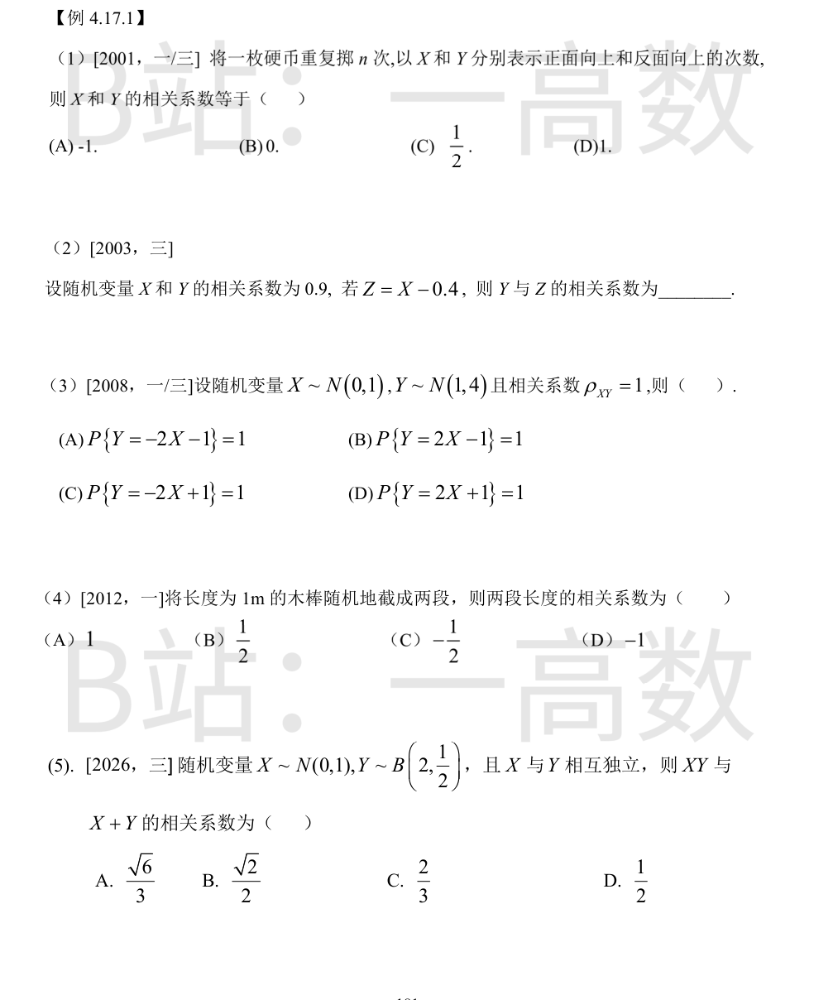
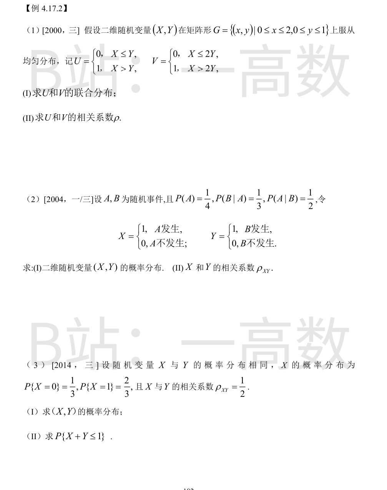
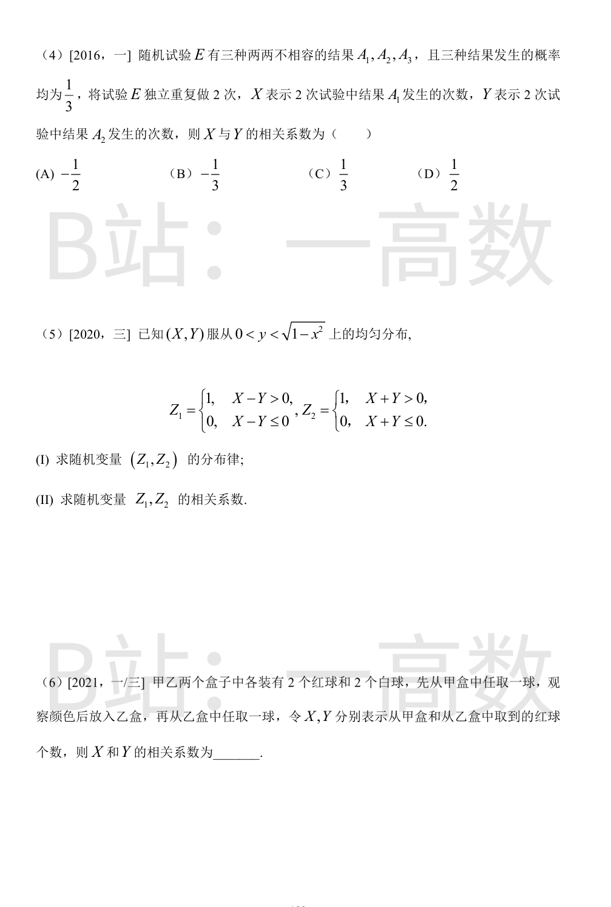
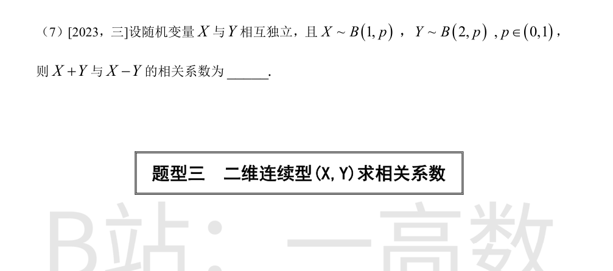
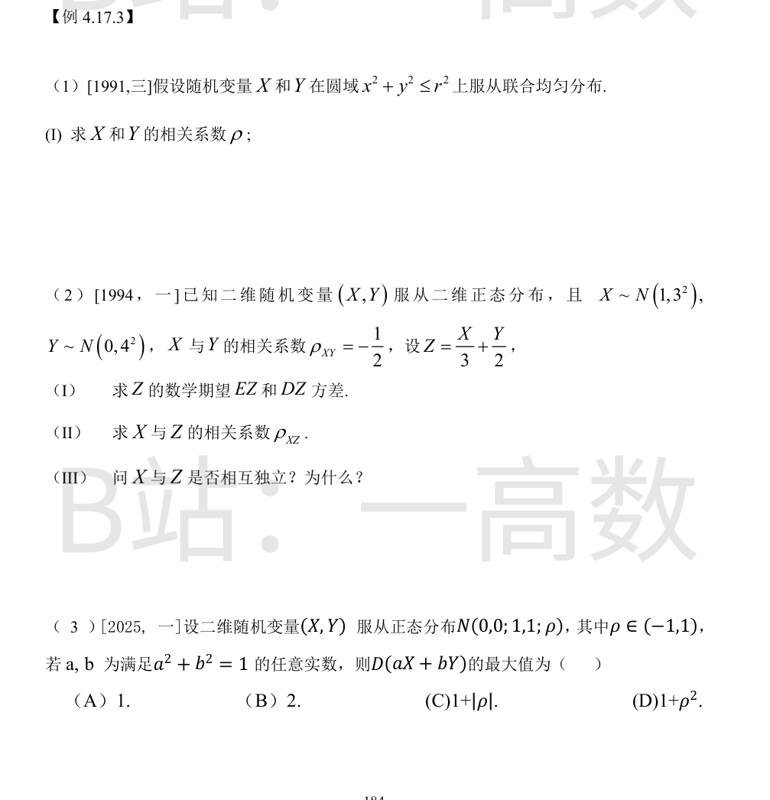
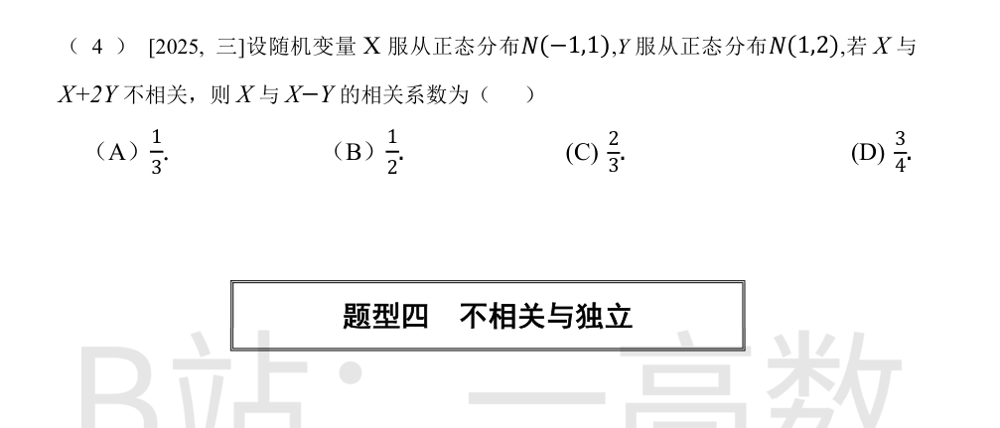
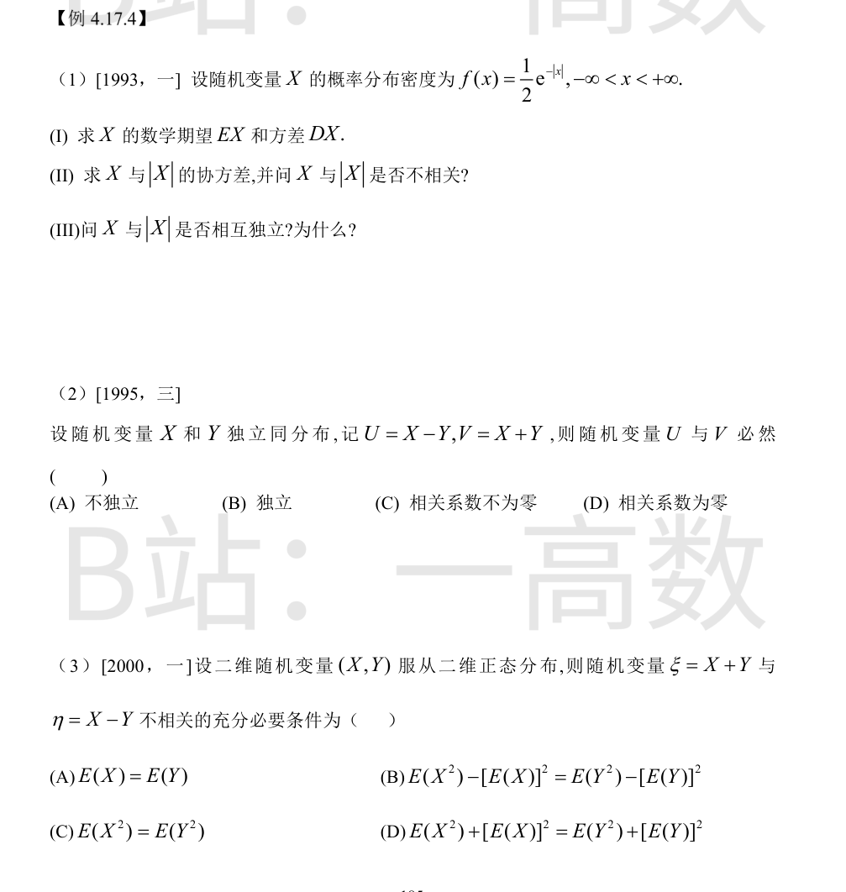

每次必正反居其一，X+Y=n，即 Y=n-X 是 X 的严格递减线性函数。
由 |ρ|=1（线性关系时）且斜率为负：ρ(X,Y)=-1。选 (A)。
Z=X-0.4 是 X 的线性变换（斜率 1>0）。相关系数在线性变换 aX+b（a≠0）下不变：
$$\rho(Y,Z)=\frac{Cov(Y,X-0.4)}{\sqrt{DY}\sqrt{D(X-0.4)}}=\frac{Cov(X,Y)}{\sqrt{DY}\sqrt{DX}}=\rho(X,Y)=0.9.$$
|ρ|=1 当且仅当存在常数 a,b 使 P(Y=aX+b)=1。
E(Y)=a·EX+b ⟹ 1=b；
D(Y)=a²D(X) ⟹ 4=a² ⟹ a=±2；
ρ=+1>0 ⟹ a=+2（a<0 时 ρ=-1）。
故 Y=2X+1（a.s.），选 (D)。
设一段长为 X，则另一段长为 Y=1-X（和恒为 1）。Y 是 X 的严格递减线性函数，故 ρ(X,Y)=-1。选 (D)。
EX=0, DX=1；EY=2×(1/2)=1, DY=2×(1/2)×(1/2)=1/2。
E(XY)=E(X)E(Y)=0；
$$E[XY(X+Y)]=E(X^2Y)+E(XY^2)=E(X^2)E(Y)+E(X)E(Y^2)=1\times1+0=1,$$
Cov(XY, X+Y)=1-0=1。
D(XY)=E(X²Y²)-[E(XY)]²=E(X²)E(Y²)=1×(1/2+1)=3/2；
D(X+Y)=DX+DY=1+1/2=3/2。
$$\rho=\frac{1}{\sqrt{\tfrac32\times\tfrac32}}=\frac{1}{3/2}=\frac23.$$
选 (C)。



密度 f(x,y)=1/2（矩形面积 2）。
(I) 按面积计算：
P(U=0,V=0)=P(X≤Y)=\int_0^1\!\int_0^y \tfrac12 dxdy=\int_0^1 \tfrac{y}{2}dy=\tfrac14；
P(U=1,V=0)=P(Y<X≤2Y)=\int_0^1\!\int_y^{2y}\tfrac12 dxdy=\int_0^1\tfrac{y}{2}dy=\tfrac14；
P(U=0,V=1)=P(X≤Y 且 X>2Y)=0（不相容）；
P(U=1,V=1)=P(X>2Y)=\int_0^1\!\int_{2y}^{2}\tfrac12 dxdy=\int_0^1(1-y)dy=\tfrac12。
(II) EU=P(U=1)=3/4，EV=P(V=1)=1/2，E(UV)=P(U=1,V=1)=1/2。
Cov(U,V)=\tfrac12-\tfrac34\cdot\tfrac12=\tfrac18；DU=\tfrac34\cdot\tfrac14=\tfrac{3}{16}，DV=\tfrac12\cdot\tfrac12=\tfrac14。
$$\rho=\frac{1/8}{\sqrt{\tfrac{3}{16}\times\tfrac14}}=\frac{1/8}{\sqrt3/8}=\frac{1}{\sqrt3}=\frac{\sqrt3}{3}.$$
P(AB)=P(B|A)P(A)=\tfrac13\cdot\tfrac14=\tfrac{1}{12}；P(B)=P(AB)/P(A|B)=\tfrac{1/12}{1/2}=\tfrac16。
(I) P(X=1,Y=1)=P(AB)=1/12；
P(X=1,Y=0)=P(A)-P(AB)=\tfrac14-\tfrac1{12}=\tfrac16；
P(X=0,Y=1)=P(B)-P(AB)=\tfrac16-\tfrac1{12}=\tfrac1{12}；
P(X=0,Y=0)=1-\tfrac1{12}-\tfrac16-\tfrac1{12}=\tfrac23。
(II) EX=P(A)=1/4，EY=P(B)=1/6，E(XY)=P(AB)=1/12。
Cov=\tfrac{1}{12}-\tfrac14\cdot\tfrac16=\tfrac{1}{12}-\tfrac{1}{24}=\tfrac{1}{24}；DX=\tfrac14\cdot\tfrac34=\tfrac{3}{16}，DY=\tfrac16\cdot\tfrac56=\tfrac{5}{36}。
$$\rho_{XY}=\frac{1/24}{\sqrt{\tfrac{3}{16}\times\tfrac{5}{36}}}=\frac{1/24}{\sqrt{15}/24}=\frac{1}{\sqrt{15}}=\frac{\sqrt{15}}{15}.$$
EX=EY=2/3，DX=DY=\tfrac23\cdot\tfrac13=\tfrac29。
Cov(X,Y)=ρ\sqrt{DX}\sqrt{DY}=\tfrac12\times\tfrac29=\tfrac19；
E(XY)=Cov+EX·EY=\tfrac19+\tfrac49=\tfrac59，故 P(X=1,Y=1)=E(XY)=\tfrac59。
(I) P(X=1,Y=0)=P(X=1)-\tfrac59=\tfrac23-\tfrac59=\tfrac19；对称地 P(X=0,Y=1)=\tfrac19；
P(X=0,Y=0)=1-\tfrac59-\tfrac19-\tfrac19=\tfrac29。
(II) X+Y≤1 即 (X,Y)≠(1,1)：
$$P\{X+Y≤1\}=1-P(1,1)=1-\tfrac59=\tfrac49.$$
(X,Y) 服从三项分布（n=2，p_1=p_2=1/3）。边缘 X~B(2,1/3)，Y~B(2,1/3)，故 DX=DY=2×\tfrac13×\tfrac23=\tfrac49。
X+Y≤2 且按计数： Cov(X,Y)=E(XY)-EX·EY，其中 X=Y=2 不可能同时发生；直接用多项分布协方差公式：
$$Cov(X,Y)=-np_1p_2=-2\times\tfrac13\times\tfrac13=-\tfrac29.$$
$$\rho=\frac{-2/9}{4/9}=-\tfrac12.$$
选 (A)。
区域为上半单位圆（面积 π/2），极角 θ∈(0,π) 均匀。
Z_1=1 ⟺ X>Y ⟺ cosθ>sinθ ⟺ θ∈(0,π/4)；
Z_2=1 ⟺ X+Y>0 ⟺ θ∈(0,3π/4)。
(I) P(Z_1=1,Z_2=1)=\frac{\pi/4}{\pi/2}=\tfrac14（θ∈(0,π/4)）；
P(Z_1=0,Z_2=1)=\frac{\pi/2}{\pi/2}=\tfrac12（θ∈(π/4,3π/4)）；
P(Z_1=0,Z_2=0)=\tfrac14（θ∈(3π/4,π)）；P(Z_1=1,Z_2=0)=0。
(II) EZ_1=\tfrac14，EZ_2=\tfrac34，E(Z_1Z_2)=P(1,1)=\tfrac14。
Cov=\tfrac14-\tfrac{3}{16}=\tfrac{1}{16}；D(Z_1)=\tfrac14\cdot\tfrac34=\tfrac{3}{16}，D(Z_2)=\tfrac34\cdot\tfrac14=\tfrac{3}{16}。
$$\rho=\frac{1/16}{3/16}=\tfrac13.$$
P(X=1)=\tfrac12。转移后乙盒：X=1 时乙盒 3 红 2 白，P(Y=1|X=1)=\tfrac35；X=0 时乙盒 2 红 3 白，P(Y=1|X=0)=\tfrac25。
E(X)=\tfrac12；E(Y)=\tfrac12\cdot\tfrac35+\tfrac12\cdot\tfrac25=\tfrac12；E(Y²)=E(Y)=\tfrac12。
E(XY)=P(X=1,Y=1)=\tfrac12\times\tfrac35=\tfrac{3}{10}；
Cov(X,Y)=\tfrac{3}{10}-\tfrac12\cdot\tfrac12=\tfrac{1}{20}；
D(X)=\tfrac14，D(Y)=\tfrac12-\tfrac14=\tfrac14。
$$\rho=\frac{1/20}{\sqrt{\tfrac14\times\tfrac14}}=\frac{1/20}{1/4}=\tfrac15.$$
【仲裁修正】独立校验发现分歧，经仲裁重解，以本答案为准：B 中间量算错：Cov(X,Y)=1/20（非 1/10），D(Y)=1/4（非 6/25）；正确 ρ=(1/20)/√((1/4)(1/4))=1/5
独立，DX=p(1-p)，DY=2p(1-p)。
$$Cov(X+Y,\,X-Y)=Cov(X,X)-Cov(X,Y)+Cov(Y,X)-Cov(Y,Y)=DX-DY=-p(1-p),$$
$$D(X+Y)=3p(1-p),\qquad D(X-Y)=3p(1-p).$$
$$\rho=\frac{-p(1-p)}{3p(1-p)}=-\tfrac13.$$


密度 f(x,y)=\frac{1}{\pi r^2}，区域关于 x 轴、y 轴均对称，故
$$EX=\iint x\,f\,dA=0,\qquad EY=0,$$
$$E(XY)=\iint xy\,f\,dA=0$$
（被积函数 xy 关于 x（或 y）是奇函数，对称区域上积分为 0）。
$$Cov(X,Y)=E(XY)-EX\cdot EY=0\ \Longrightarrow\ \rho=0.$$
（注意：由于支撑非矩形，X 与 Y 并不相互独立。）
Cov(X,Y)=ρ\cdot3\cdot4=\tfrac12\times(-12)=-6。
(I) EZ=\tfrac13×1+\tfrac12×0=\tfrac13；
$$DZ=\tfrac19 DX+\tfrac14 DY+2\cdot\tfrac13\cdot\tfrac12 Cov(X,Y)=1+4+\tfrac13(-6)=5-2=3.$$
(II)
$$Cov(X,Z)=\tfrac13 DX+\tfrac12 Cov(X,Y)=\tfrac13\times9+\tfrac12(-6)=3-3=0,$$
故 ρ_XZ=0。
(III) (Z,X) 是二维正态向量 (X,Y) 的线性变换，仍服从二维正态分布；二维正态下不相关等价于独立，故 X 与 Z 相互独立。
D(aX+bY)=a²+b²+2ρab=1+2ρab。在约束 a²+b²=1 下用参数 a=cosθ, b=sinθ：
$$1+2ρ\cosθ\sinθ=1+ρ\sin2θ,$$
最大值 = 1+|ρ|（ρ>0 取 θ=π/4，ρ<0 取 θ=-π/4）。即二次型矩阵 [[1,ρ],[ρ,1]] 的最大特征值 1+|ρ|。选 (C)。
不相关 ⟹ Cov(X,X+2Y)=DX+2Cov(X,Y)=1+2Cov(X,Y)=0 ⟹ Cov(X,Y)=-\tfrac12。
$$Cov(X,X-Y)=DX-Cov(X,Y)=1+\tfrac12=\tfrac32,$$
$$D(X-Y)=DX+DY-2Cov(X,Y)=1+2-2(-\tfrac12)=4,$$
$$\rho=\frac{3/2}{\sqrt{1\times4}}=\frac{3}{4}.$$
选 (D)。

(I) EX=\int x\tfrac12 e^{-|x|}dx=0（奇函数）；
$$DX=E(X^2)=2\int_0^{+\infty}x^2\cdot\tfrac12e^{-x}dx=\int_0^{+\infty}x^2e^{-x}dx=2!=2.$$
(II) E|X|=2\int_0^{+\infty}x\tfrac12e^{-x}dx=1；x|x|f(x) 为奇函数，故 E(X|X|)=0。
$$Cov(X,|X|)=E(X|X|)-EX\cdot E|X|=0-0=0,$$
故 X 与 |X| 不相关。
(III) 不独立：取事件 {X≤1} 与 {|X|≤1}。
P(X≤1)=1-\tfrac12e^{-1}，P(|X|≤1)=1-e^{-1}，
P(X≤1,|X|≤1)=P(|X|≤1)=1-e^{-1}，
而 P(X≤1)P(|X|≤1)=(1-\tfrac12e^{-1})(1-e^{-1})≠1-e^{-1}，故不独立。
$$Cov(U,V)=Cov(X-Y,X+Y)=Cov(X,X)+Cov(X,Y)-Cov(Y,X)-Cov(Y,Y)=DX-DY=0$$
（独立同分布 ⟹ DX=DY）。故 ρ_UV=0 必然成立，选 (D)。
(A)(B) 不必然：仅当 (X,Y) 服从二维正态时 U,V 才独立，一般分布未必（如 X,Y 取 0-1 值时可验证 U,V 不独立）；(C) 与 ρ=0 矛盾。
$$Cov(\xi,\eta)=Cov(X+Y,X-Y)=DX-DY,$$
不相关 ⟺ Cov(ξ,η)=0 ⟺ DX=DY，即
$$E(X^2)-[E(X)]^2=E(Y^2)-[E(Y)]^2.$$
选 (B)。（二维正态条件使不相关与独立等价，但本题只需要协方差为零的充要条件。）